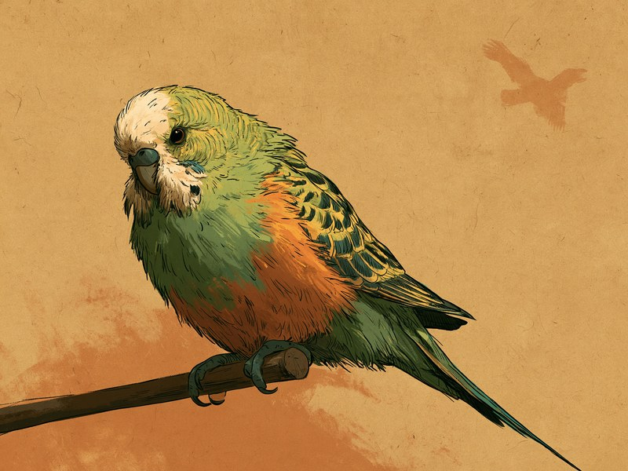

インコをはじめとする鳥には、具合が悪くても弱った姿を隠そうとする習性がある。元気なふりが上手すぎて、飼い主が気づいた時にはすでに進行していることも多い、ざんねんな習性だ。 Parakeets and other birds have a habit of hiding signs of weakness even when they are unwell. They are so good at pretending to be fine that by the time their owner notices, the illness has often already progressed—a rather unfortunate habit.
インコなどの鳥は、体調が悪くても弱った姿を隠そうとする習性があり、飼い主が異変に気づいた時にはすでに病気が進行していることが多い、と複数の動物病院が注意を呼びかけています。
- 習性:弱った姿を隠そうとするため、具合が悪くても元気そうに見えてしまう
- 落とし穴:飼い主が気づいた時にはすでに進行していることが多い
- 見つけ方:いつもより食べ方が少ない、呼吸音が荒いなど、ささいな変化がサイン
- 対策:ささいな変化を感じた時点で早期の診察を、というのが鳥専門病院の呼びかけ
🔍 ちょっと寄り道:我慢強いのは鳥だけではなく、人にも「つい無理をしてしまうタイプ」がいます。気になった方は性格診断で自分のタイプを確かめてみてください。
元気そうに見えるのに、実は我慢している
インコなどの鳥には、弱った姿を隠そうとする習性がある。東京・池袋の鳥類専門動物病院は診療案内の中で、この習性があるからこそ「いつもより食べ方が少ない」「呼吸音が荒い」といったささいな変化を感じた時点で、早期の診察を受けてほしいと呼びかけている。
つまり、止まり木でいつも通りにしているように見えても、それが本当に元気なのか、それとも元気なふりなのかは、見た目だけでは分かりにくいということだ。鳥の「平気な顔」は、なかなかのポーカーフェイスなのである。
ふだんはおしゃべりで感情表現が豊かなインコが、体調のことになると急に口を閉ざしてしまう。この我慢強さは、飼い主にとってはなんともざんねんな習性といえる。
出典: 鳥類専門動物病院(東京・池袋)診療案内 birdpro.co.jp
気づいた時には進行していた、と病院が口をそろえる理由
この「隠す習性」は、鳥専門病院に限った話ではありません。愛知県、埼玉県、徳島県の動物病院も、鳥は本能的に体調不良を隠すため、飼い主が気づいた時にはすでに病気が進行していることが多い、と同じ趣旨の注意をそれぞれ発信しています。地域も規模も異なる複数の病院が同じことを言っているあたりに、この習性の手ごわさがにじんでいます。
では、なぜ鳥はそこまで弱みを隠すのでしょうか。野生の世界では弱った個体から先に天敵に狙われやすいため、弱みを見せないようにする本能が身についているのではないか、と考えられています。この理由づけに触れているかどうかは動物病院によって差があり、すべての病院が同じように説明しているわけではありません。
理由はどうあれ、飼育下では天敵はいないのに、我慢のクセだけがしっかり残っている。守ってくれる相手にまで平気なふりをしてしまうところが、鳥のざんねんなところであり、同時にいじらしいところでもあります。
出典: ダイゴペットクリニック(愛知県) info-dpc.net / すみか動物病院(埼玉県) sumika-ah.com / とくしま鳥の病院(徳島県) tokushimabirdclinic.com
それでも漏れ出る、小さなサイン
どれだけ我慢上手でも、体調の変化は少しずつ表に出てきます。羽を膨らませてじっとしている、便の様子がいつもと違う、食欲が落ちている、といった変化は、そのささやかなサインです。
鳥専門病院が「ささいな変化を感じた時点で早期の診察を」と呼びかけているのは、まさにこのためです。鳥が我慢している分、飼い主が先回りして小さな変化に気づく側に回る必要がある、というわけです。
元気そうに見えるかどうかより、「いつもと違うかどうか」が鳥のサインを見抜くコツ。食べる量や呼吸の音、便の様子など、ふだんの姿を知っておくことが、我慢上手な鳥の異変に気づく近道になりそうです。